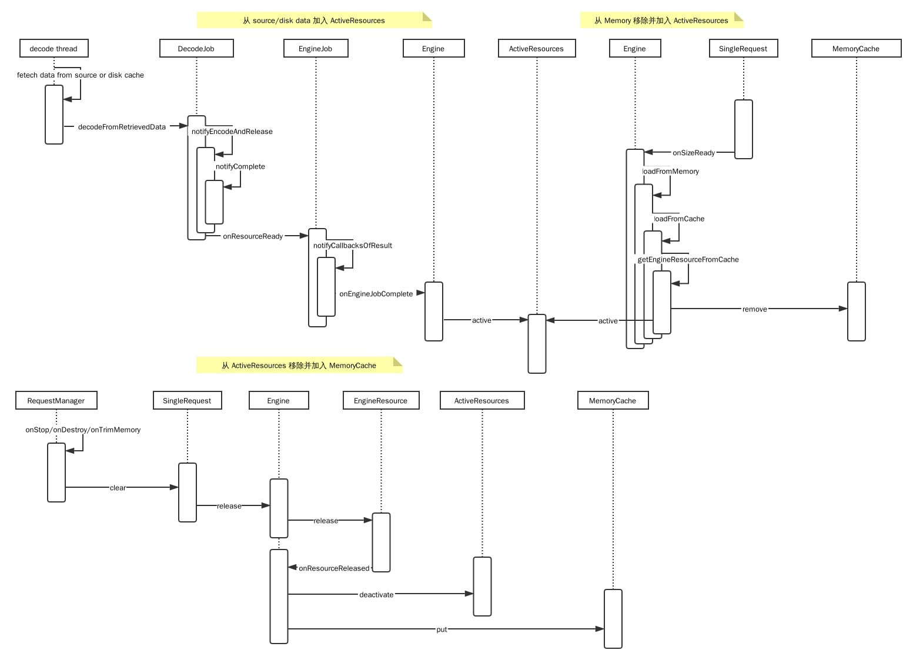
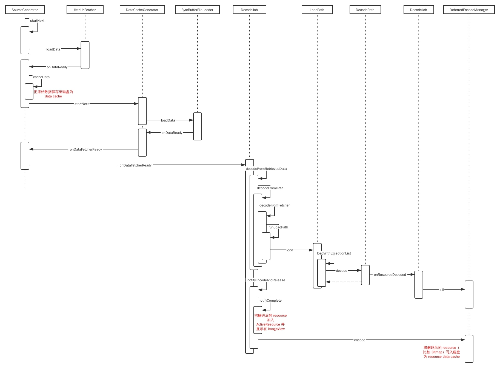

图解 Glide
网上讲解 Glide 的文章一搜一大把，但几乎都是以文字的形式来讲解；我自己也写过不少 Glide 的笔记，也是文字为主；但是时间长了经常忘了其中的细节，加上 Glide 的源码不太易懂，所以决定用时序图来分析和记录研究 Glide 的过程
时序图
下面两张图是一次图片加载的大体流程，有读过源码的同学基本上通过这两种图就能回忆起其中的细节；没读过源码的同学也可以先了解下 Glide 里各个类的作用


RequestManager - 请求管理器
往 Activity/Fragment 添加一个 RequestManagerFragment（没有 View） 用以监听宿主的生命周期，从而实现请求的管理和绑定

内存缓存
内存缓存有 ActiveResources 和 LruResourceCache（MemoryCache），如下图，它们关系是：
- 从 source/data 解码的 resource 将被加入
ActiveResources - 当
onStop/onDestory/onTrimMemory时 resource 被释放，从ActiveResources移除并放入MemoryCache - 加载时如果命中缓存，则从
MemoryCache移除并加入ActiveResources
它们的不同之处：
- 它们对应 resource 的不同生命周期：使用中 -
ActiveResources，释放后 -MemoryCache ActiveResources是对所有使用中 resource 的弱引用，相当于对所有使用中 resource 的收集和统计，没有大小限制MemoryCache引用释放的资源，有大小限制，实现是LruResourceCache

磁盘缓存
磁盘缓存有两层：data cache 和 resource cache，它们的关系在于：
- 都是磁盘缓存，都以文件的形式存在于 disk cache dir，只是 key 不同
- 从网络抓取 → 保存为 data cache → 解码为 resource → 保存为 resource cache（optional）→ 返回 resource
- 下次加载时，先尝试加载 resource cache 再尝试加载 data cache
它们的区别在于：
- data cache 缓存的是原始数据（也就是从 source 直接抓取到的数据流），resource cache 缓存的是解码后（比如
Bitmap）的数据 - resource cache 能够加速解码的速度；比如 source 是网络上的图片，一般是 jpg or png，则从 data cache 加载需要解码为 Bitmap，而 resource cache 直接缓存 bitmap bytes，省了解码这步
- resource cache 会增大磁盘缓存起码一倍；比如上述的 bitmap bytes 比压缩格式的 jpg 要大
- 是否有 resource cache 受几个条件的影响
DiskCacheStrategy
NONE - 没有磁盘缓存
DATA - 只缓存 data cache
RESOURCE - 只缓存 resource cache
ALL - 都缓存
AUTOMATIC - 自动
// 看下 AUTOMATIC 的情况
// data cache，只缓存网络资源，不缓存 asset file，local disk file 等本地资源
public boolean isDataCacheable(DataSource dataSource) {
return dataSource == DataSource.REMOTE;
}
// resource cache 只缓存 asset file，local disk file 等本地资源
public boolean isResourceCacheable(
boolean isFromAlternateCacheKey, DataSource dataSource, EncodeStrategy encodeStrategy) {
return ((isFromAlternateCacheKey && dataSource == DataSource.DATA_DISK_CACHE)
|| dataSource == DataSource.LOCAL)
&& encodeStrategy == EncodeStrategy.TRANSFORMED;
}
池化
使用池化技术（ArrayPool 和 BitmapPool）降低内存抖动
Glide 在很多地方都需要临时用到一小块的内存，使用 byte array pool 可以平缓内存使用，避免频繁的内存申请
- io 时需要一个内存缓冲区来读写
- 从文件解码图片时
BitmapFactory.Options.inTempStorage downsample时需要先加载 image exif 信息
BitmapPool 则在 Transformation.transform 做 Bitmap 转换时用得比较多
线程调度
- load memory cache 阶段是 ui 线程
- decode cache 阶段是一个 decode 线程；此阶段会将 data 解码至 memory resource，采用单个线程排队解码，可以防止多个线程同时解码申请大内存造成内存抖动甚至 OOM
- fetch source 阶段是线程池
加载路径
加载路径把 model - dataClass - resourceClass - transcodeClass 串联起来
// url string 是 model，类型是 String；transcodeClass 是 Drawable.class，最终的目标类型；此时的 resourceClass 是 Object.class
GlideApp.with(this).as(Drawable.class).load(url).into(photoView);- 通过
ModelLoaderRegistry知道 model 能使用哪些ModelLoader，能加载到 jvm 里成为哪些 dataClass；string url 的话，适用于StringLoader，能加载为InputStream和ParcelFileDescriptor；如果有多个 loader 可以用，则使用MultiModelLoader，它专门用来包裹多个 loader，因为对于一个 model 可能会有多个 loader 可以处理它；对于MultiXXX，内部都有个属性currentIndex指定使用哪个实例（一般情况下就是第 0 个了，除非有代码设置过currentIndex）；loader 在注册表中的位置可以通过 append、prepend 调整 - 通过
ResourceDecoderRegistry知道上述 dataClass 列表能够 decode 为哪些 resourceClass；InputStream能够 decode 为Bitmap，GifDrawable和BitmapDrawable；ParcelFileDescriptor能够 decode 为Bitmap和BitmapDrawable - 如果上述的 resourceClass 等于 transcodeClass 或它的子类，则把 resourceClass 加入到目标类型列表里；否则通过
TranscoderRegistry判断能否使用注册的ResourceTranscoder将 resourceClass 转换为 transcodeClass 或它的子类，可以的话也将其加入目标类型列表里面；比如Bitmap可以用BitmapDrawableTranscoder转换为Drawable - 最终得到一个目标类型列表，里面的类型等于 transcodeClass 或它的子类；它表明可以从 model 加载得到
Drawable；这个列表有：Bitmap，BitmapDrawable，GifDrawable - 按顺序（也即是注册表里的顺序），使用对应的 decoder 把
InputStream解码；这里说下，因为 url 所在的是一张图片，所以StreamGifDecoder.handles发现不是 gif 会返回 false，于是不能转为GifDrawable，跳到下一个；假设下一个是Bitmap，可以正常 decode 为Drawable，于是就略过了BitmapDrawable这个目标类型
Glide 有三层主要的 component：ModelLoader，ResourceDecoder 和 ResourceTranscoder；每层都注册了大量的实现，所以对于某个加载请求，会有多个路径；而到底使用哪条加载路径，取决于 component 在 Register 里的位置，靠前的 component 会被优先选择，如果这条路径走得通，那么后续的路径就被忽略了
- string url ->
InputStream->Bitmap->Drawable（用了 transcode，Bitmap可以转换成BitmapDrawable） - string url ->
InputStream->BitmapDrawable - string url ->
ByteBuffer->Bitmap->Drawable - …
问答
- 同一个
ImageView，加载多个图片，为什么不会错乱呢？
将 Request 放入 View.setTag，旧的 Resquest 将被新的 Request 取消，防止同一个 ImageView 的多个请求错乱